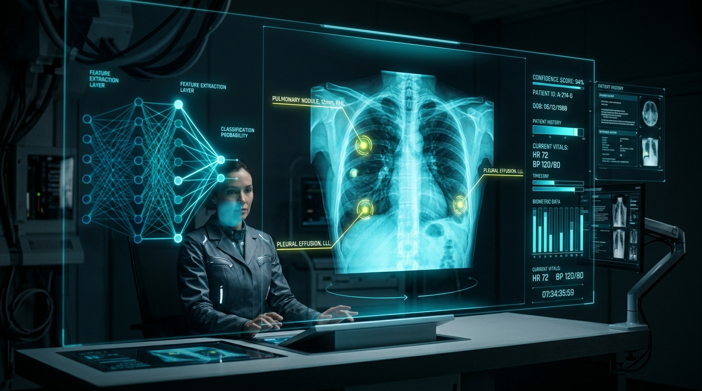
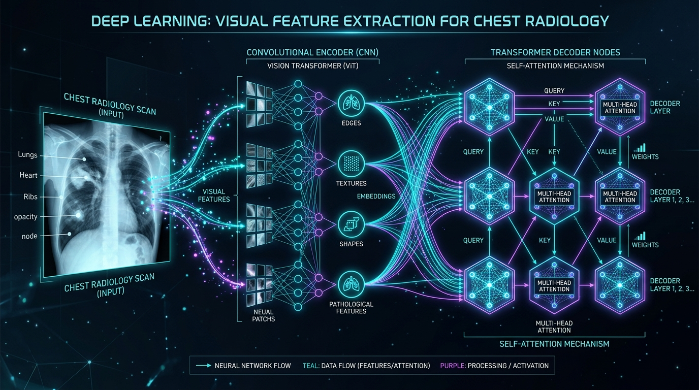

Chest X-Ray Diagnostic
Report Generator V3
An End-to-End Autonomous AI Radiology Pipeline featuring DenseNet121, Spatial Transformers & Autoregressive Multi-Task Learning.

Eliminating Radiology
Report Bottlenecks
Global healthcare systems face critical shortages of specialized radiologists. Manual reporting leads to diagnostic delays and high clinical cognitive load.
DenseNet121 +
Spatial Transformer
Replacing global pooling with a 2D Spatial Transformer preserves raw $7\times 7$ grid visual feature tokens with 2D positional embeddings.
- ✦ Visual Backbone: DenseNet121 pre-trained on MIMIC-CXR visual tokens.
- ✦ Spatial Transformer: Preserves spatial patch positions without feature loss.
- ✦ Cross-Attention Decoder: Multi-head self-attention & cross-attention text generator.

Joint Pathology Classification & Text Synthesis
Autoregressive Text Decoder Head
Generates detailed clinical impression tokens word-by-word with configurable Beam Search decoding (Width 1-5) and length normalization.
14 CheXpert Classification Head
Predicts multi-label probabilities across 14 major thoracic pathologies (Atelectasis, Cardiomegaly, Pleural Effusion, Pneumothorax, etc.).
3-Phase Progressive Training & Benchmarks
Phase 1: Warmup
Frozen visual backbone, training initial cross-attention decoder layers.
Phase 2: Fine-Tuning
Unfreezing top 80 DenseNet backbone layers with reduced learning rate.
Phase 3: End-to-End
Full joint fine-tuning of visual backbone, spatial transformer, and dual heads.
Unified Streamlit
Radiology Dashboard
Radiologists and clinicians can interactively drag-and-drop chest X-rays, toggle Greedy vs Beam Search, inspect predicted pathologies, and synthesize full reports in real-time.